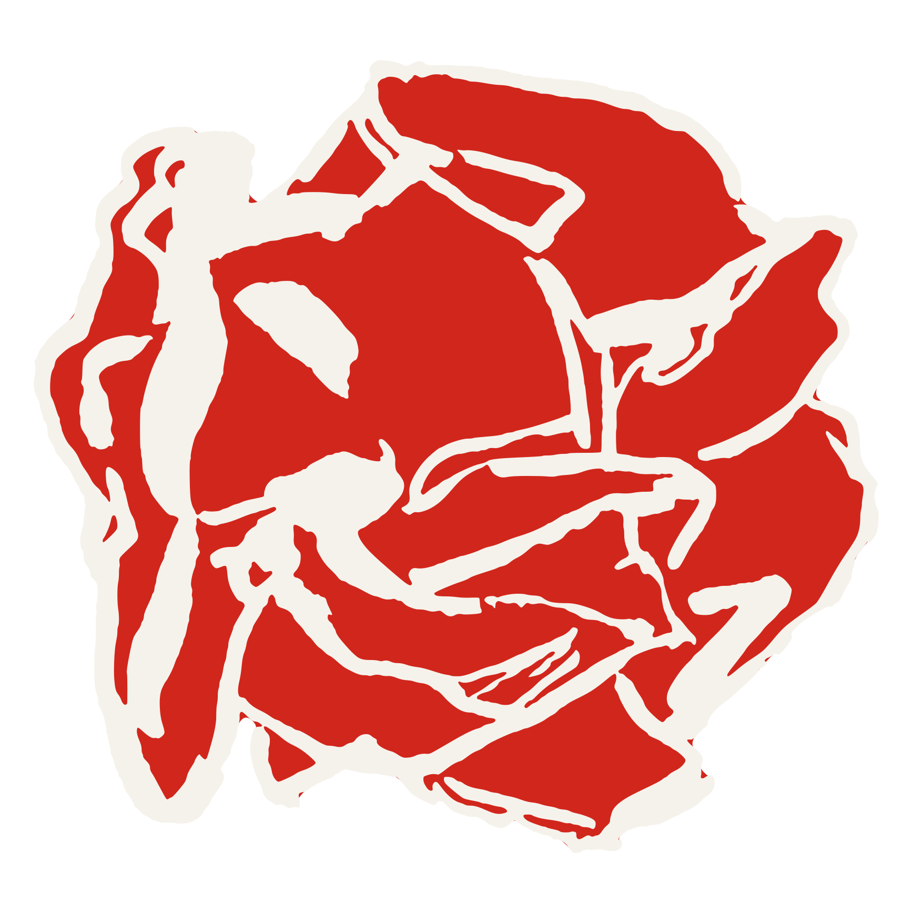

interesting materials.the curriculum wheel
Gropius drew the Bauhaus course as a target: the preliminary course on the outside, the workshops inside it, building at the centre. Here it is drawn again, with every ring answering the pointer and saying what became of it, and where this catalogue keeps it.
The diagram appeared in the statutes of the Staatliches Bauhaus in Weimar in July 1922 and was reprinted the next year, in Gropius's essay Idee und Aufbau, in the exhibition book Staatliches Bauhaus Weimar 1919–1923, which is in the library. It reads from the outside in. Everyone began on the rim, with half a year of the preliminary course. Those who passed entered one of seven workshops, named not for a trade but for a material, for three years of training, with five studies running alongside. A few went on to the centre, which the school called simply building. The words are the diagram's own, in the English rendering usually reproduced; the case is the school's lowercase, which Herbert Bayer made the rule in 1925.
after Walter Gropius, scheme of the Bauhaus course, 1922. point at a ring; click to keep it; tab through the segments and press enter. red marks the two durations the original writes at the top. no Russian rendering from the school's own time could be found; the Russian follows the words of VKhUTEMAS, the Moscow school founded in 1920 on the same plan: основное отделение for the basic course, the disciplines of пространство, цвет and композиция, and the производственные мастерские by their material.
the rings, from the outside in
- The preliminary course, Vorlehre, half a year. Compulsory, on probation, and the only ring everyone shared. Its two halves are written on the lower rim: the elementary study of form, and the study of materials in the basic workshop. Itten ran it from 1919, Moholy-Nagy and Albers from 1923, Albers alone from 1928; in Dessau it grew to a year.
- Three years in a workshop, and the five studies taught beside the bench: nature, materials, space and colour and composition, construction and representation, materials and tools. The first four are the Formlehre, the form teaching of the painters; the last is the Werklehre, the craft itself. Together they are the dual mastership, a master of form and a master of craft in every shop, which Weimar kept and Dessau gave up once its own graduates could teach both.
- The seven workshops, by material: stone, wood, metal, textiles, colour, glass, clay. Three of them, stone, glass and clay, did not survive the move to Dessau in 1925; wood and metal were folded into one fitting-out workshop in 1929; weaving ran to the end and paid for much of the rest.
- Building, at the centre, with its four words: site, testing, design, and building and engineering science. The goal of the whole, and for eight years a goal without a course: architecture was not taught until 1927.
the seven workshops, and where they went
| on the wheel | the workshop | masters | what came of it | in this catalogue |
|---|---|---|---|---|
| stone | stone sculpture, Weimar 1919–25 | Itten, Schlemmer; Hartwig | the Monument to the March Dead, 1921–22; merged into the Dessau sculpture workshop under Joost Schmidt | wood, bone and horn, the nearest; the lattices |
| wood | wood sculpture, and the joinery, 1919–33 | Itten, Gropius, Breuer | the Sommerfeld house carvings; the slatted chair; the stacking tables; the fitting-out workshop from 1929 | wood, bone and horn |
| metal | the metal workshop, 1919–29 | Itten, Dell, Moholy-Nagy, Brandt | the Bauhaus lamp of 1924; the Kandem lamps; folded into fitting-out in 1929 | metal |
| textiles | the weaving workshop, 1919–33 | Itten, Börner, Muche, Stölzl, Reich | Bauhaus fabrics by the metre; Stölzl's tapestries; synthetic fibres under Meyer | yarn and rope, cloth, warmth |
| colour | wall painting, 1920–33 | Itten, Schlemmer, Kandinsky, Scheper | the colour plans of the Dessau houses; Bauhaus wallpaper with Rasch, 1929 | none: the page keeps one red, and the primaries for the three forms |
| glass | glass painting, 1920–25 | Itten, Klee; Albers | windows for the Sommerfeld and Otte houses; closed at the move, Albers to the preliminary course | clay and glass |
| clay | the pottery at Dornburg, 1919–25 | Marcks; Krehan, Bogler, Lindig | slip-cast prototypes for the factory from 1923; the one workshop left behind in 1925 | clay and glass |
The catalogue's own workshops are named for these, and the about page says which descend from which. Where the school had no such workshop, plastics, light and current, printing in three dimensions, film and foil, glues, the table says so rather than pretending. The material studies of the preliminary course keep the cards that fit no workshop at all.
the three preliminary courses
The outer ring was taught three ways in fourteen years, and the differences are the history of the school. Itten, 1919 to 1923, made it a course in seeing and feeling: contrast exercises, rhythm studies drawn with the whole arm, analyses of old masters, breathing before drawing, and a Mazdaznan diet that Gropius came to find hard to defend to the Thuringian parliament. Moholy-Nagy and Albers, 1923 to 1928, turned it toward construction: Albers's material studies in the first semester, with wood, metal, paper and glass handled by their own rules, and Moholy-Nagy's balance and space studies in the second, the school's turn from the crafts toward industry made into a syllabus. Albers alone, 1928 to 1933, gave the material study up to eighteen hours a week, asked for the most effect from the least material, energy and time, and called the course a school of invention. He carried it to Black Mountain College in 1933 and to Yale in 1950, which is how the exercise outlived the school.
the dates
- April 1919the Staatliches Bauhaus opens in Weimar under Walter Gropius, merging the academy of fine art and the school of arts and crafts; Itten's probationary semester becomes the preliminary course.
- 1920the pottery moves to Dornburg an der Saale; the women's class is merged into the weaving workshop.
- July 1922the statutes are printed, with this diagram and Schlemmer's new seal.
- 1923Itten leaves in the spring; Moholy-Nagy arrives; the pottery turns to slip casting; the summer exhibition and the Haus am Horn; the book that reprints the diagram.
- April 1925the school moves to Dessau; the pottery, the stone workshop and the glass workshop are left behind; the dual mastership ends; Bayer's lowercase becomes the house rule.
- December 1926the Dessau building opens, lit by the metal workshop and painted by the wall-painting workshop.
- April 1927the building department opens under Hannes Meyer: the centre of the wheel has a course at last.
- 1928Gropius resigns in February; Meyer is director; Moholy-Nagy, Bayer and Breuer leave; Albers runs the preliminary course alone.
- 1930Meyer is dismissed; Mies van der Rohe is director, and the school leans to architecture.
- October 1932Dessau closes the school; Mies reopens it in a Berlin factory.
- April 1933the Berlin school is searched and sealed; in July the masters vote to dissolve it.
what this page took from it
A catalogue of what materials do, how they are made and how they fail is the lower rim of the wheel carried on: the study of materials in the basic workshop, with no product in mind. Its categories are the workshops of the middle ring, under the names of their materials. Its plates are the Formlehre, drawn from data. Its library is the course's own writing. And its one rule of design, nothing on the page that is not doing a job, is Albers's, from the outer ring: the most effect from the least.
sources
- Walter Gropius, Idee und Aufbau des Staatlichen Bauhauses, in Staatliches Bauhaus Weimar 1919–1923 (Weimar and Munich, 1923), p. 10, the reprint of the diagram; archive.org.
- Getty Research Institute, Bauhaus: Pioneers of a New World, principles and curriculum, with the 1922 lithograph as fig. 14; getty.edu.
- German History Intersections, Walter Gropius, conceptual diagram of the Bauhaus curriculum (1923); germanhistory-intersections.org.
- Bauhaus Kooperation, the workshop pages: metal, weaving, ceramics, sculpture, wall painting, joinery; and Josef Albers's preliminary course.
- Bauhaus-Archiv Berlin, the Bauhaus 1919–1933, the timeline; bauhaus.de.
- Smarthistory, the Bauhaus, an introduction; smarthistory.org.
- The texts themselves, in the library: the 1919 programme, the 1923 book, Klee's sketchbook, Kandinsky's point and line.
Set in Jost, after Futura, in the manner of the Staatliches Bauhaus: one typeface, one working colour, everything lowercase, nothing on the page that is not doing a job. See also how this is made and how it compares →